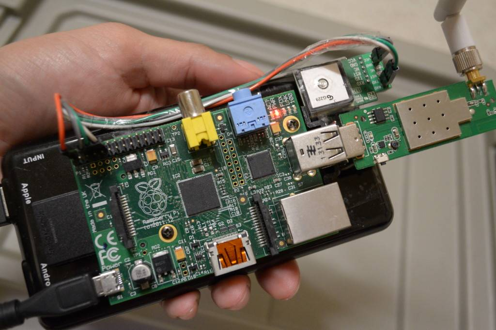
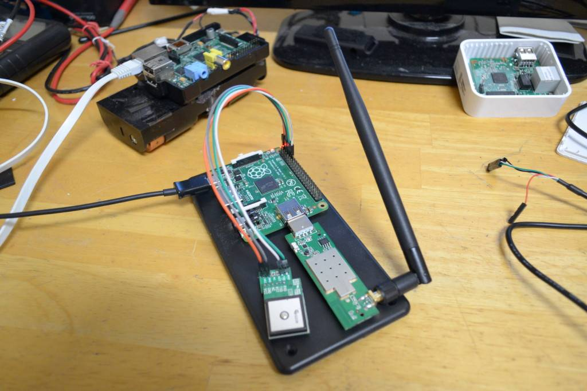

|| Pushing GPS logs to mobile hotspot, author: xor-function || 03/02/2015 || Back to main
Before I wrote a gps tracker shell script that was geared toward remote tracking. It would
attempt to use available open wireless access points to upload logs to a server over the
Internet (rpi-tracker).

Now I took a different approach and it's written in Perl.
It does not require an Internet connection to function, but does require a wireless LAN.
The gist of it is that this GPS tracker becomes an automated wireless client (here's the twist)
that only associates to your personal WLAN/hotspot. The hotspot association is handled by
system calls to wpa_supplicant. The logs are then uploaded to your phone via FTP. The
FTP server on android I used was via ES File explorer.
The FTP user name, password and port are set to defaults and are specified in the readme.
The Perl script uses the Net::FTP and GPS::NMEA modules which remove the need of using other
programs to handle the GPS data from the device and ftp client functions to perform the file upload.
It also converts the GPS data to decimal degree format so that the coordinates can be search directly with Google.
The Perl code is available on github
https://github.com/xor-function/gps2hotspot
Download a copy with git.
git clone https://github.com/xor-function/gps2hotspot.git
DEMO
The device is the same platform a raspberry pi model B but uses a Skylab GPS Module MT3329 SKM53 which
is noticeably more accurate than the previous GPS chip I used. The wireless USB adapter is a TP-Link
TL-WN722N which also supports the ability to function as a access point with hostapd.
The battery is the Anker I have used before, since it has a recharging port this can be connected to
a vehicle so that it may recharge when the engine is running then run off the battery when the car is off.
I have attempted to get this running on a smaller platform the raspberry pi A+ but kept running into
reliability issues, even when I used perlcc to generate a binary of the program.

I believe this is probably due to the Perl modules that are being used in the code. So I would have to
resort to rewriting/porting the code to c/c++ to get it working to my desired reliability but I'm not
going to spend that much time on this.